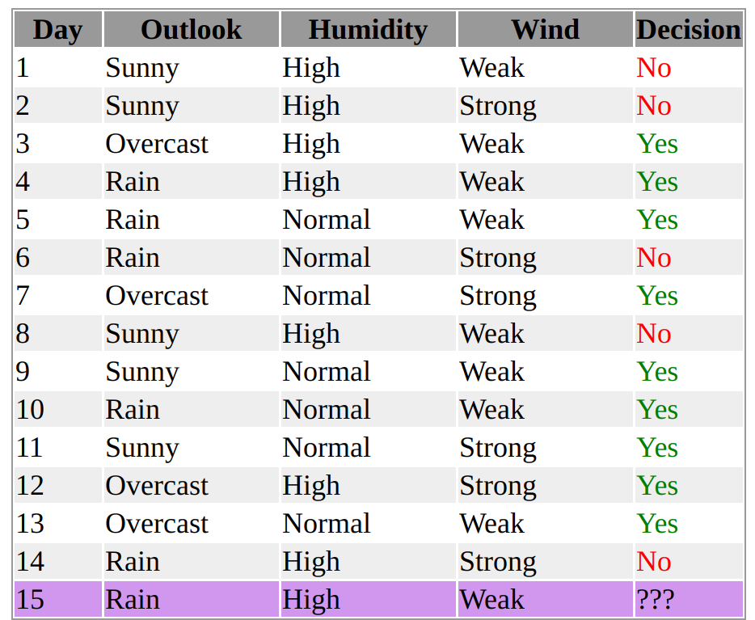
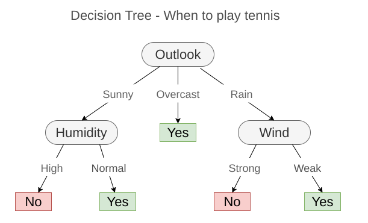

Decision Trees
Created for
Created by
2019,

What are Decision Trees?
What are Decision Trees?
Overview
- Extensive usage of Information Theory
- Decision trees can be regarded as a set of
if-thenrules. - Or formally speaking, Decision trees represent a disjunction of conjunctive clauses
- A hierarchical data structure that represents data by implementing a divide and conquer strategy
- Can be used with binary/multi-valued/continuous inputs
- Trees can be applied to both regression and classification problems
- Classification And Regression Tree (CART)

Tree Terminology
- Each node tests an attribute (ask question)
- The start node is called root node, the other - internal nodes
- Each branch corresponds to attribute value
- Each leaf node assigns a classification
- Pure node - all the samples at that node have the same class label.
Example - Are we going to play tennis?
DecisionTree - when to play tennis
{kind=link}
Represented as disjunction of conjunctions
$$ (Outlook = Sunny ∧ Humidity = Normal) \\ ∨ (Outlook = Overcast) \\ ∨ (Outlook = Rain ∧ W ind = W eak) $$- Learn a pattern through a sequence of questions.
- Next question asked depends on the answer to the current question
- Questions can be asked in a “yes-no” or “true-false” style that do not require any notion of metric
- Sequence of questions is displayed in a directed decision tree
- Classification of a pattern begins at the root node until a leaf node was reached.
- Split data into subsets
- Are they pure?
- If Yes then Stop
- Else Repeat
A decision tree progressively splits the training set into smaller and smaller subsets
"Divide and Conquer" Algorithm:
Which is the best split?
Finding the best split
Finding the best split
Let's order/split the data
- We want to build the minimal (depth) tree
- On each split step, we have multiple choices
- On the first level, we can split data on 'Outlook'/'Humidity'/'Wind'
- How to measure which is the best attribute to split on?
{kind=link}
ID3 (Iterative Dichotomiser 3) overview
- Based on Entropy
- Choose the "best" feature to split on
- Employs a top-down, greedy search through the space of possible branches with no backtracking
ID3 Algorithm
- Find A, that is the “best” decision attribute for next node
- Assign A as decision attribute for node
- For each value of A, create new descendant of node
- Sort training examples to leaf nodes
- If training examples form pure set, Then STOP, Else iterate over new leaf nodes
Entropy in Information Theory
Entropy in Information Theory
Overview

Overview
- Introduced by Claude Shannon in 1948
- "A Mathematical Theory of Communication"
- Typically is measured in bits (when $log_2$) is used
- The entropy of a fair coin toss is 1 bit
- But if an observer can see the coin is on its head, then the coin entropy for that observer is 0 bits
- Entropy is zero when one outcome is certain to occur. I.e. the message "The sun will rise tommorow" caries 0 information, as it's entropy is 0.
- Entropy only takes into account the probability of observing a specific event, so the information it encapsulates is information about the underlying probability distribution, not the meaning of the events themselves.
$${\displaystyle \mathrm {H} {(S)}=\sum _{x\in X}{-p(x)\log _{2}p(x)}}$$
Entropy in decision trees
- Entropy ${ {H} {(S)}}$ is a measure of the amount of uncertainty in the (data) set ${S}$ (i.e. entropy characterizes the (data) set ${S}$).
- Where $S$ is a sample of training examples.
- $p(x)$ is the proportion of $x_{th}$ examples in S
- For binary tree, $X \in (True,False)$
$${\displaystyle \mathrm {H} {(S)}=\sum _{x\in X}{-p(x)\log _{2}p(x)}}$$
Entropy

Calculate Entropy
$${\displaystyle \mathrm {H} {(S)}=\sum _{x\in X}{-p(x)\log _{2}p(x)}}$$
- Let's take the 'Play' column. It's values are into two categories:
- n - with 'Yes' and m=N-n with 'No'
- And we want to group them by the labels. Let:
- $p = n/N$ and $q = m/N$
- The entropy of our set is given by the following equation:
- Which is: ${H} {(S)}= -(0.64*log_2{0.64}) - (0.36*log_2{0.36}) = 0.94$
$${\displaystyle \mathrm {H} {(S)}= {-p\log _{2}p} + {-q\log _{2}q} } $$
Information Gain
Information Gain
Overview
- Also known in statistics as Mutual Information
- Information gain $IG(A)$ is the measure of the difference in entropy from before to after the set ${\displaystyle S}$ is split on an attribute ${\displaystyle A}$.
- In other words, how much uncertainty in ${\displaystyle S}$ was reduced after splitting set ${\displaystyle S}$ on attribute ${\displaystyle A}$
- We want to maximize the Information Gain
- Gain(S, A) = expected reduction in entropy in S due to sorting on A
Pros/Cons ans Applications
Pros/Cons ans Applications
Pros
- Very easily interpretable (not a "Black-Box" for the user)
- We can explain how the model works to get to any decision
- Can be a universal approximator
- can represented any DNF (Disjunctive Logical Formula)
- we can split infinitely the input space
- Can model problems with multiple outputs
- Can handle missing data and irrelevant attributes (Gain=0)
- Data requires minimal preparation
- Low memory print (very compact after pruning)
- Takes time to learn, but is very fast in prediction phase - O(treeDepth)
- The are non-parametric
Cons
- Not optimal (ID3 is greedy)
- The decision boundaries are parallel (axis aligned) - not good for continuous values
Applications
- Medical diagnosis
- Credit risk analysis
- Calendar scheduling
Decision Forest
Decision Forest
Overview
These slides are based on
customised version of
framework